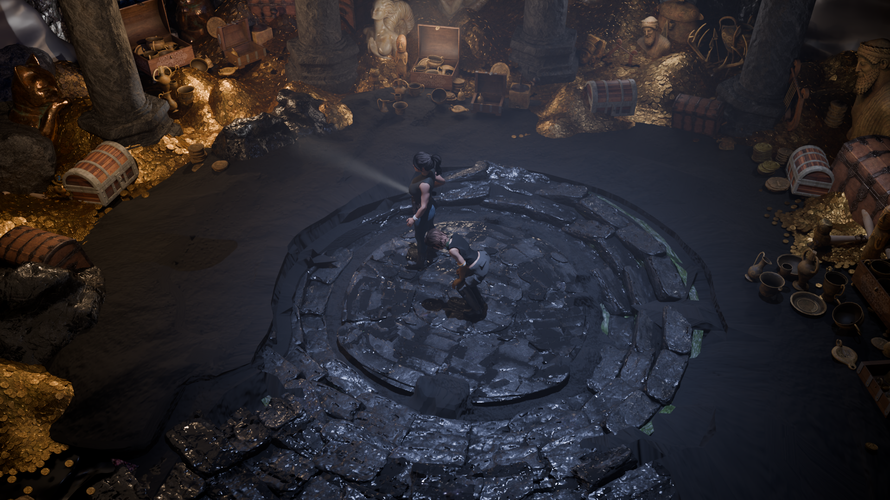
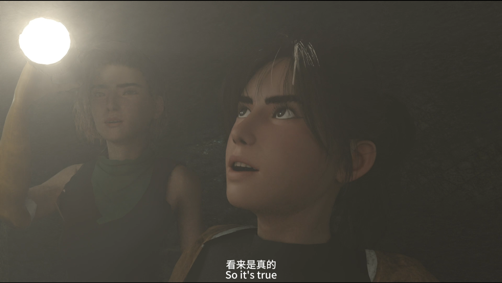
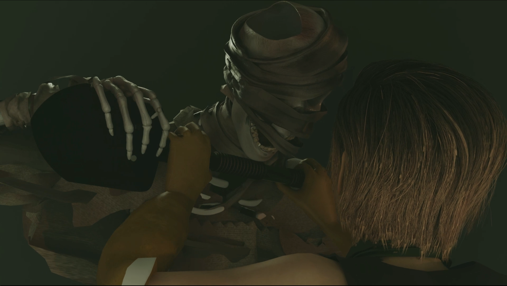
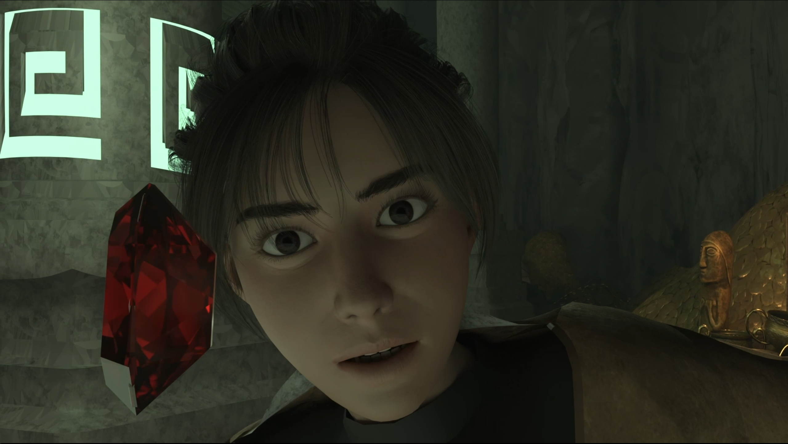
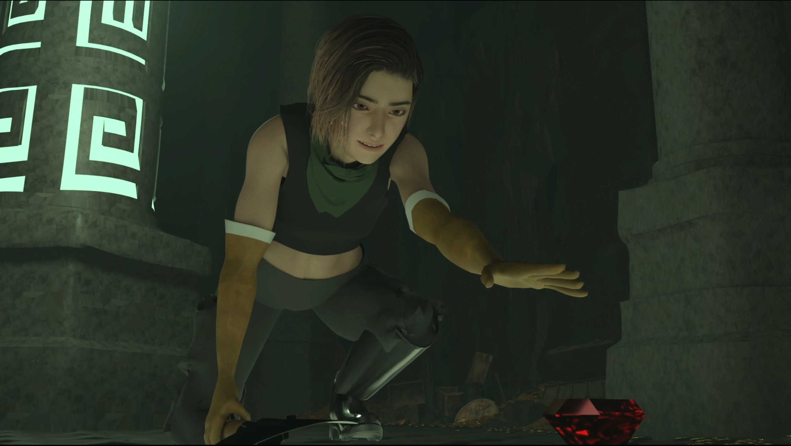
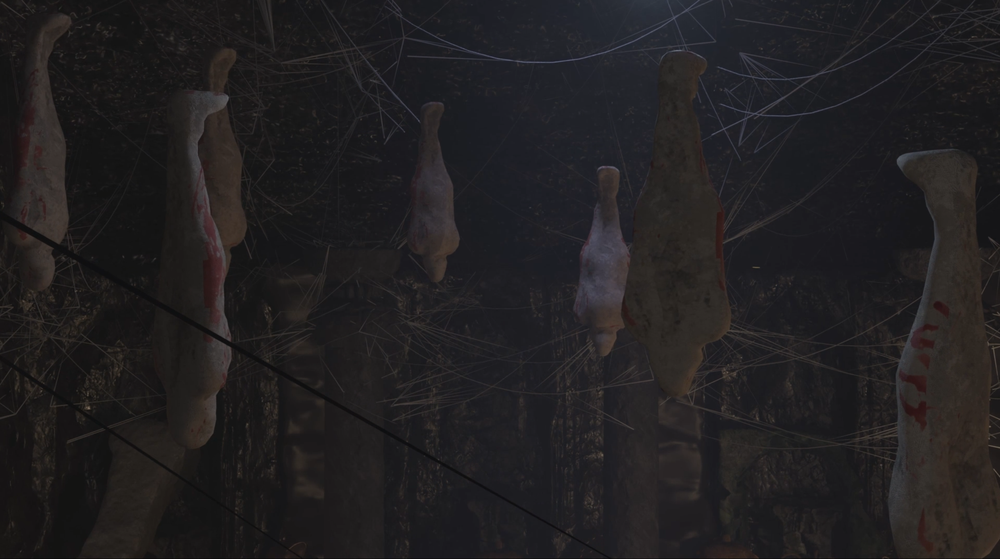
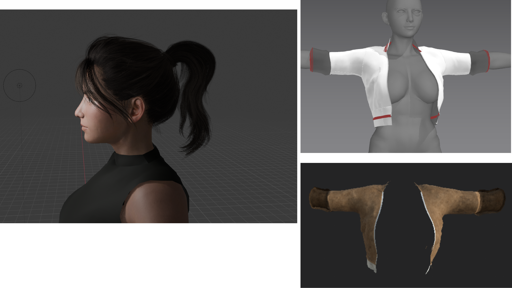
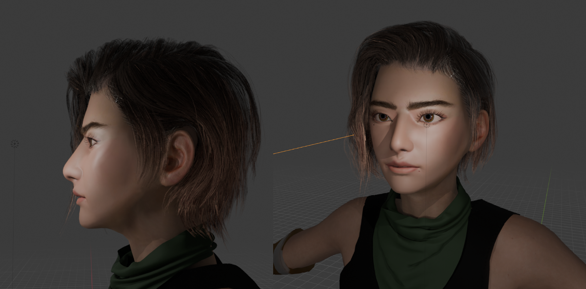
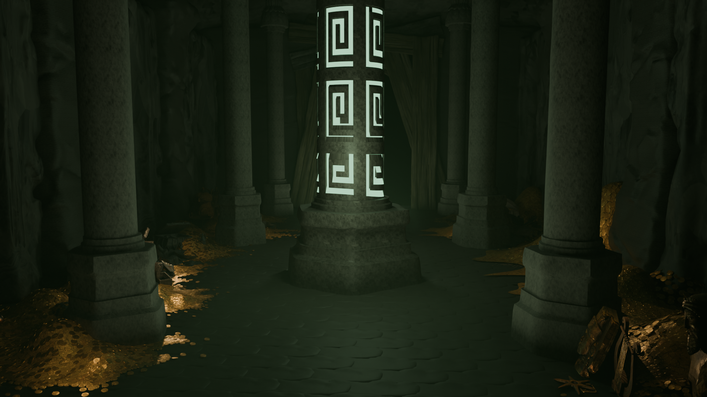

LURE饵 · 3D ANIMATED SHORT
↓
Some tombs are never meant
to be opened.
FULL FILM · FULL LENGTH
A 3D animated short about greed. Two explorers enter a dark burial chamber with flashlights, and the treasure inside, above all a red gem, pulls them further in.
Technical director, scriptwriter, environment design, character design and modeling, animation, lighting, compositing, and rendering.
WATCH THE FILM ON YOUTUBE ↗






